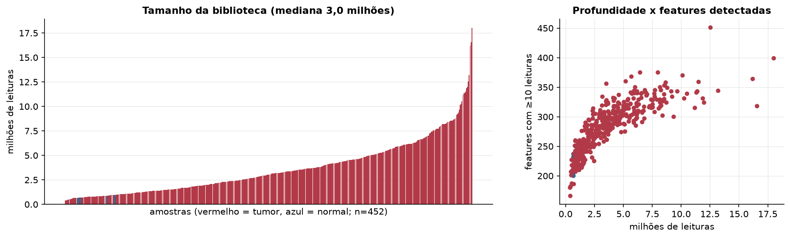
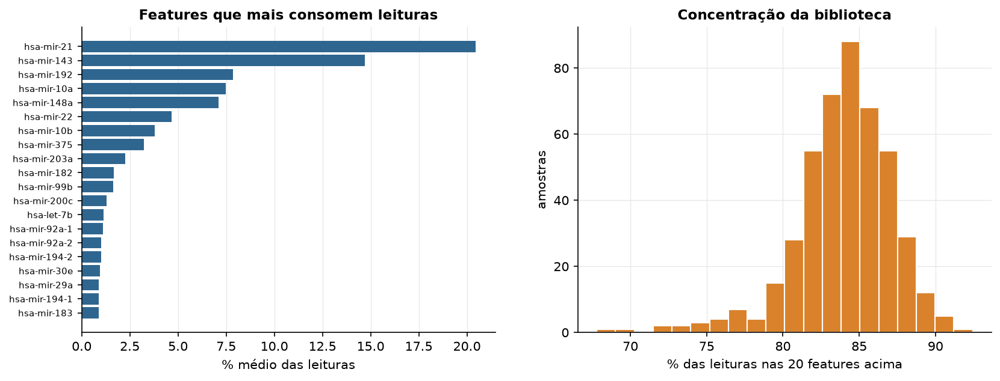
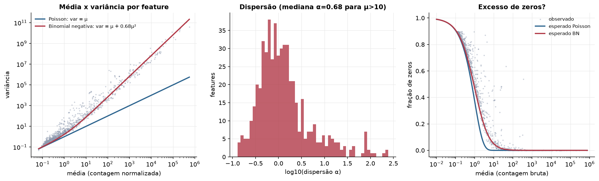
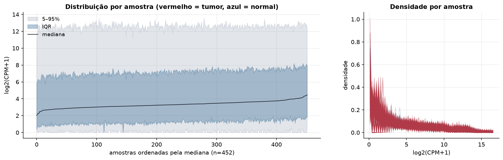
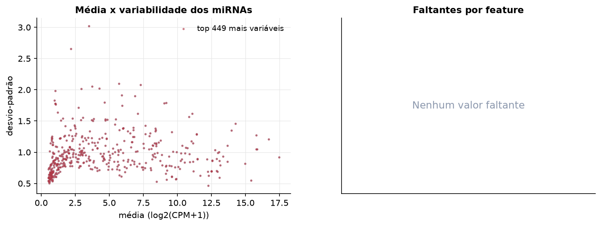
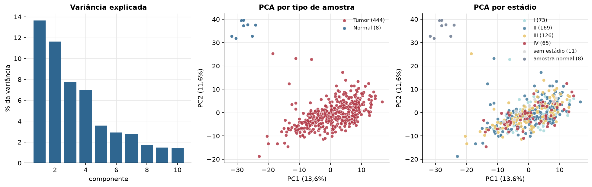
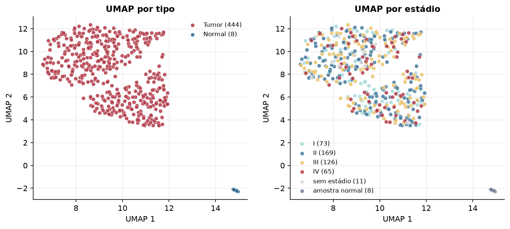
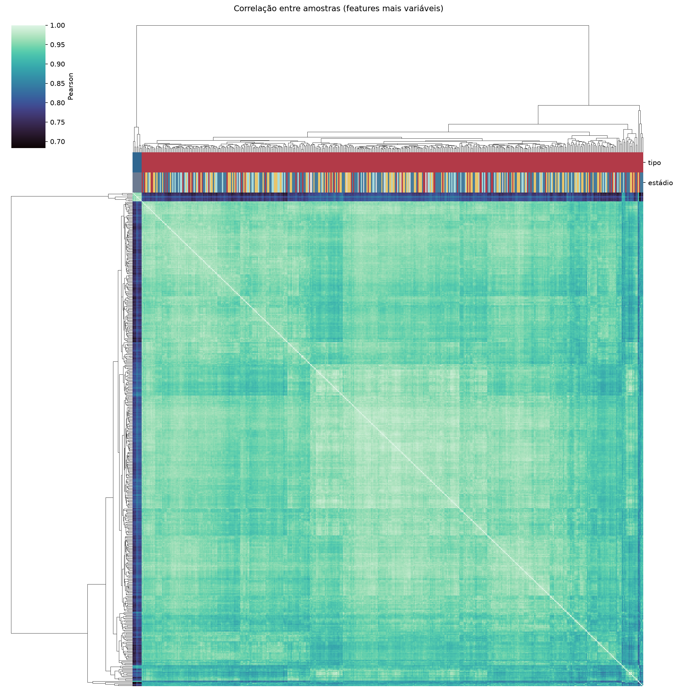
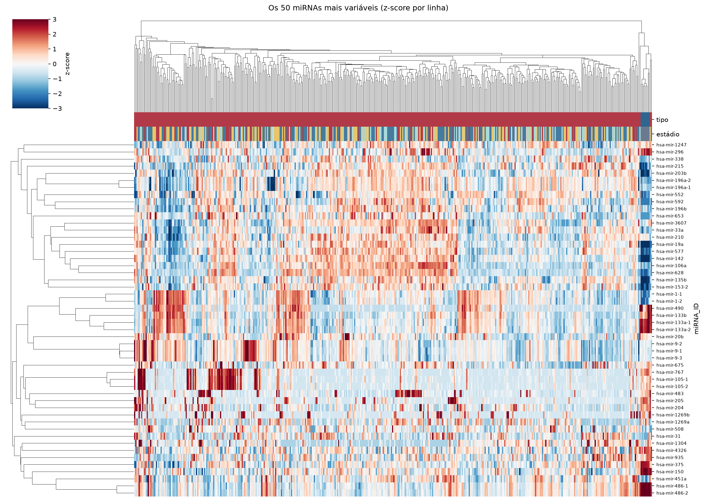
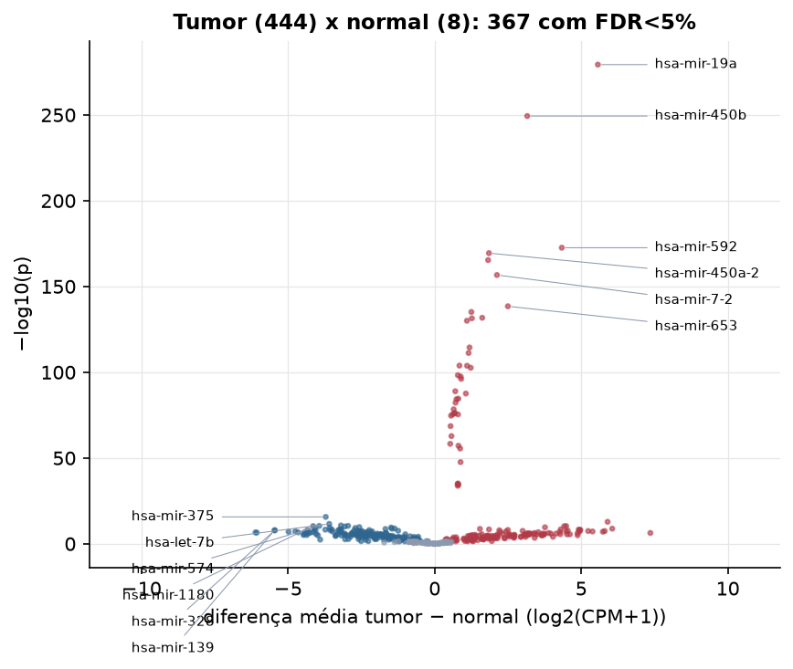

COAD · miRNA-seq: contagens brutas (GDC)
BCGSC miRNA Profiling (miRBase v21) · gerado em 21/10/2026 20:33
3,0 Mtamanho mediano
0,68dispersão mediana α
449miRNAs
444amostras tumorais
8amostras normais
0,0%valores faltantes
Fonte: API do GDC (BCGSC miRNA Profiling)
Principais resultados
- Bibliotecas de 0,4 a 18,0 milhões de leituras (mediana 3,0). 951 de 1.881 features têm leitura em pelo menos 10% das amostras.
- A variância cresce bem acima da média: a dispersão mediana da binomial negativa é α=0.68 (para features com média > 10). Isso descarta um modelo Poisson e indica binomial negativa (ou Poisson-lognormal) na verossimilhança.
- A fração de zeros é compatível com a binomial negativa (diferença mediana -1,3%); inflação de zeros não parece necessária.
- Em média 84,3% das leituras de cada amostra vão para as 20 features mais abundantes.
- 449 miRNAs medidos em 452 amostras (444 tumorais e 8 normais); 0,0% dos valores estão faltando.
- Os dois primeiros componentes principais explicam 13,6% e 11,6% da variância das features mais variáveis.
- Correlação mediana entre amostras: 0,95.
- Amostras com correlação muito abaixo das demais (possíveis outliers técnicos): TCGA-A6-2685-11, TCGA-A6-2684-11, TCGA-A6-2683-11, TCGA-A6-2671-11, TCGA-A6-2683-01, TCGA-A6-5664-01, TCGA-A6-2680-11, TCGA-AA-3520-11, TCGA-AA-3518-01, TCGA-AA-3525-11.
- Tumor x normal: 367 miRNAs diferentes com FDR < 5% (185 maiores no tumor, 182 maiores no normal; 8 pacientes têm o par tumor-normal).
- Mais aumentados no tumor: hsa-mir-19a, hsa-mir-450b, hsa-mir-592, hsa-mir-450a-2, hsa-mir-450a-1, hsa-mir-7-2, hsa-mir-653, hsa-mir-1245a.
- Mais reduzidos no tumor: hsa-mir-375, hsa-let-7b, hsa-mir-423, hsa-mir-874, hsa-mir-574, hsa-mir-1180, hsa-mir-378a, hsa-mir-589.
- Associações clínicas com p < 0,05 nos componentes principais: PC3 com estádio (p=0.036); PC1 com idade (p=0.015); PC2 com idade (p=3.3e-05).
Biblioteca


Sobredispersão e zeros

Exploração em log2(CPM+1)
Features com CPM ≥ 1 em pelo menos 20% das amostras (449 features).
Distribuição dos valores


Estrutura das amostras




Tumor x normal

Features mais diferentes entre tumor e normal
| miRNA_ID | diferenca_tumor_menos_normal | t | p | fdr |
|---|---|---|---|---|
| hsa-mir-19a | 5.568 | 86.725 | 4.63e-280 | 2.08e-277 |
| hsa-mir-450b | 3.159 | 73.408 | 4.47e-250 | 1e-247 |
| hsa-mir-592 | 4.338 | 46.725 | 2.6e-173 | 3.89e-171 |
| hsa-mir-450a-2 | 1.853 | 45.808 | 3.78e-170 | 4.24e-168 |
| hsa-mir-450a-1 | 1.825 | 44.65 | 4.22e-166 | 3.79e-164 |
| hsa-mir-7-2 | 2.126 | 42.227 | 2.1e-157 | 1.57e-155 |
| hsa-mir-653 | 2.499 | 37.405 | 3.52e-139 | 2.26e-137 |
| hsa-mir-1245a | 1.253 | 36.562 | 7.29e-136 | 4.09e-134 |
| hsa-mir-4668 | 1.623 | 35.71 | 1.79e-132 | 8.92e-131 |
| hsa-mir-376a-1 | 1.27 | 35.634 | 3.62e-132 | 1.62e-130 |
| hsa-mir-5586 | 1.102 | 35.277 | 9.77e-131 | 3.99e-129 |
| hsa-mir-1277 | 1.191 | 31.507 | 3.54e-115 | 1.32e-113 |
| hsa-mir-549a | 1.159 | 30.747 | 5.92e-112 | 2.04e-110 |
| hsa-mir-3682 | 0.846 | 29.04 | 1.35e-104 | 4.32e-103 |
| hsa-mir-556 | 1.107 | 29.018 | 1.66e-104 | 4.98e-103 |
| hsa-mir-153-1 | 1.232 | 28.749 | 2.48e-103 | 6.95e-102 |
| hsa-mir-643 | 0.792 | 27.759 | 5.41e-99 | 1.43e-97 |
| hsa-mir-7705 | 0.885 | 27.59 | 3.01e-98 | 7.52e-97 |
| hsa-mir-4444-2 | 0.906 | 27.277 | 7.34e-97 | 1.74e-95 |
| hsa-mir-380 | 0.705 | 25.657 | 1.23e-89 | 2.75e-88 |
| hsa-mir-4791 | 1.065 | 25.36 | 2.65e-88 | 5.67e-87 |
| hsa-mir-570 | 0.809 | 24.693 | 2.7e-85 | 5.51e-84 |
| hsa-mir-376a-2 | 0.745 | 24.623 | 5.56e-85 | 1.09e-83 |
| hsa-mir-545 | 0.713 | 24.179 | 5.73e-83 | 1.07e-81 |
| hsa-mir-656 | 0.649 | 23.326 | 4.29e-79 | 7.7e-78 |
| hsa-mir-559 | 0.69 | 22.857 | 5.91e-77 | 1.02e-75 |
| hsa-mir-4444-1 | 0.68 | 22.802 | 1.05e-76 | 1.75e-75 |
| hsa-mir-580 | 0.616 | 22.687 | 3.54e-76 | 5.68e-75 |
| hsa-mir-3662 | 0.799 | 22.673 | 4.11e-76 | 6.36e-75 |
| hsa-mir-3117 | 0.56 | 22.515 | 2.15e-75 | 3.22e-74 |
Associação com variáveis clínicas
p-valores da associação dos três primeiros componentes principais (só tumores) com estádio (Kruskal-Wallis), sexo (Mann-Whitney), idade (Spearman) e sobrevida global (Cox univariado).
| estádio (Kruskal) | sexo (Mann-Whitney) | idade (Spearman) | sobrevida OS (Cox) | |
|---|---|---|---|---|
| PC1 (14,4%) | 0.631 | 0.579 | 0.015 | 0.891 |
| PC2 (8,9%) | 0.255 | 0.755 | 3.31e-05 | 0.448 |
| PC3 (8,5%) | 0.036 | 0.534 | 0.385 | 0.073 |